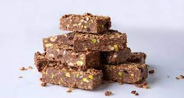

Tahini bars

Packed with energy, these bars are an excellent option to take with you on a hike
Ingredients
- 450g tahini, or peanut butter
- 200g honey
- 200g chocolate couverture, cut into pieces
- 150g nuts
- 150g whole-grain cereal
- 200g oats
- 80g cranberries, dried
Let's make these badboys
- Heat the honey in the microwave for 30 seconds.
- Combine the tahini and honey together in a large bowl. Be careful not to overmix because it will make the mixture too thick.
- Put the chocolate in a bowl. Cover with plastic wrap and melt in the microwave for 2 minutes, set at 800 watts. (Or you can melt it in a bain marie.)
- Add the melted chocolate to the tahini-honey mixture and mix.
- Add the oats, mixed nuts and cranberries. Mix with a spatula. Add the cereal and continue to mix by hand.
- Spread a very large piece of plastic wrap over a 20x30 cm baking pan, letting it hang over the edges. Spread the mixture over the wrap and sprinkle some more cereal over the top. Cover with overhanging plastic wrap.
- Refrigerate for 3-4 hours, until firm.
- To serve, cut into 20 equal sized bars, each 5 cm thick.